COLUMBIA（コロムビア）/DENON（ デンオン、デノン）
日本コロムビア（現 コロムビアミュージックエンタテインメント）の電機部門が分離独立した会社で、現在はディーアンドエムホールディングスの音響機器ブランドカンパニーの一つ。
もともとは円盤録音再生機を製作していた「日本電音機製作所」のブランドだったが、同社は1963年、日本コロムビア（現・コロムビアミュージックエンタテインメント）に吸収合併された。その後、日本コロムビアの放送事業等の業務用機器のブランドとなったが、やがてオーディオ全般に対するブランドとなった。2001年に日本コロムビアより分離独立、2002年に
日本マランツと株式移転によってディーアンドエムホールディングスを設立し、同社の完全子会社となり、今日に至る。
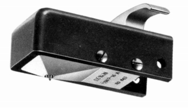
（昭和16年に日本電音機製作所が製作した宝石針付き、シェル付きSP用カートリッジ PA-16)
オーディオブランドとしてはDL-103に代表されるカートリッジやターンテーブルが有名であり、アンプやチューナー、スピーカー、ＣＤプレイヤーなど、オーディオ機器全般に製品を送り込んだ。またPCM録音機の実用化も同社である。
なお現在では「デノン」と表記されるが、管理人には「デンオン」の方がなじみがあるので、以降、当サイトでは「デンオン」と表記する。
�T.カートリッジ
1.MC型カートリッジ
�@DL-103系統
もともとは放送用に開発されたDL-103とそのバリエーションモデル。DL-103は0.65mil丸針・針圧2.5gの安定度重視の古典的な製品だが、1970年代には針先・カンチレバーなどを改良した軽針圧指向のモデル(DL-103S、103D）も存在する。またDL-103Mはボディデザイン・一点支持構造はDL-103の系統だが、発電系に空芯巻枠を採用するなどこのシリーズとしては異質であり、故長岡鉄男氏の本ではDL-1000等の系統に近いといわれた。CDが主流となった1980年代半ば以降のモデル(DL-103LC以降）は基本となるDL-103のコイル線材やボディの素材を変更したモデルである。なおDL-103の20周年モデルでDL-103GOLDという機種があるが、この機種についてはデータを持っていない為、掲載していない。
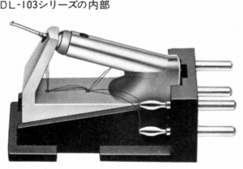
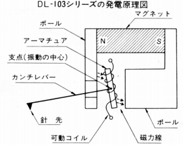
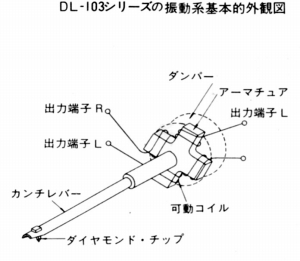
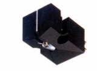
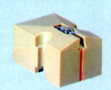
（左 DL-103 右 DL-103D)DL-103 DL-103S DL-103D DL-103M
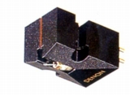
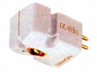
（左 DL-103LC�U 右 DL-103FL)DL-103LC DL-103LC�U DL-103SL DL-103GL DL-103C1 DL-103FL DL-103R
�ADL-103以外の系統
発売当初はともかく、1970年代後半にはDL-103はすでに古典的なカートリッジになっていた。このころの軽針圧に本格的に対応した最初の製品は1979年発売のDL-303である。1984年のDL-304からネジ４本止め対応に改良された。DL-1000は1980年代初頭の高級機ブームの際に登場した最上級機、これにあわせるように最高級のトランスとアームも発売された。アルミコイルを採用した製品だったが故障が多く、すぐにDL-1000Aにモデルチェンジした。DL-55などは廉価版MC型の機種。
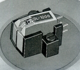
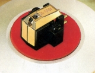
（左 DL-1000 右 DL-1000A)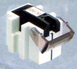
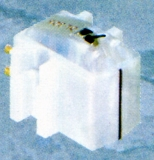
（左 DL-301 右 DL-305）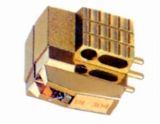
（DL-304）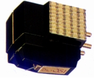
(DL-S1)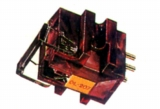
(DL-207)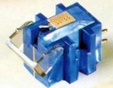
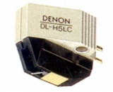
（左 DL-55 右 DL-H5LC）�B高出力型
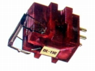
(DL-110)�Cモノラル用
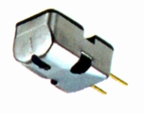
(DL-102)2.MM型カートリッジ
DL-109と同様のピアノ線による1点支持構造を持つのがDL-107、108、109である。1960年代に誕生した異方性フェライトマグネットのモデルがDL-107、磁気回路を改良しサマリュームコバルトマグネットを採用したのがDL-109、サマリュームコバルトマグネットを採用したが廉価に抑えたモデルがDL-108である。DL-202は1970年代中盤〜後半に流行したシェル一体型の高級モデル。
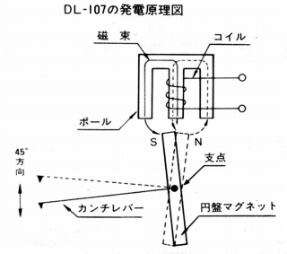 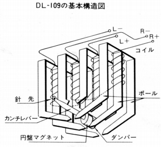 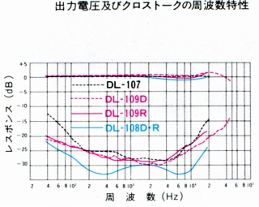
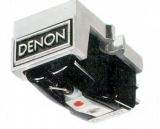
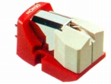
（左 DL-107 右 DL-108D)DL-107 DL-108R DL-108D DL-109R DL-109D
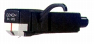
(DL-202)
�U.昇圧トランス・ヘッドアンプ
DENONはMCカートリッジ向けの昇圧手段では、トランスとヘッドアンプ両方を出した。トランスの型番は「AU」、ヘッドアンプの型番は「HA」。
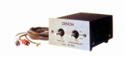
（AU-320)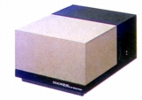
(AU-1000)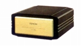
(AU-S1)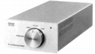
(HA-500)
�V.トーンアーム
1970年代前半までの機種（〜DA-304)はデンオン本来の業務用の色が強く、アームリフターなどが無いシンプルな機種だった。中にはDL-103専用ともいえるDA-302、303などもあった。一般的なアームへの転機となったのはDA-305で、DA-304の設計を受け継いでいるが、オプションでアームリフターが用意された。DA-307以降はアームリフター/インサイドフォースキャンセラー標準装備の一般的なアームとなっていった。1970年代後半の実効質量の軽量化ブームに対応したのがDA-401、1980年代初頭の高級機ブームに登場したのがDA-1000である。1990年頃すべて生産終了した。型番は｢DA｣｡
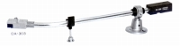
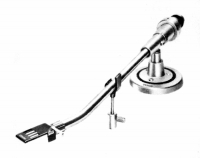
（左 DA-303 右 DA-304)
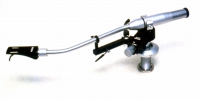
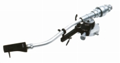
（左 DA-307 右 DA-309)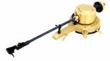
（DA-1000)
�W.ヘッドシェル
�X.その他
ターンテーブルシート 2点 スタビライザー 1点 他